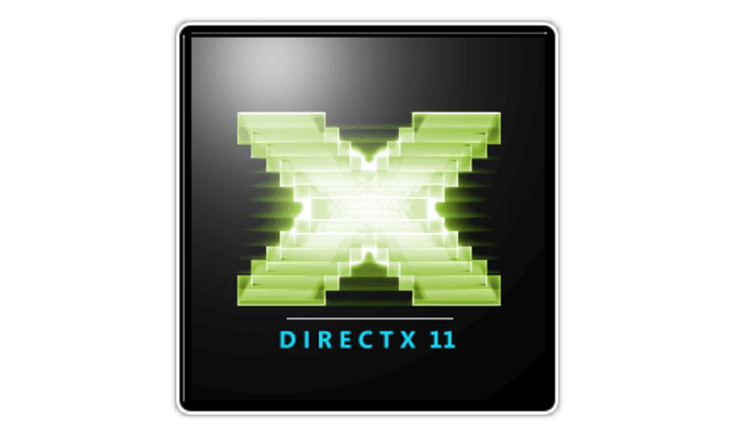

Ports

Developer: Cellar Door Games
Platforms: iOS
Release Date: August 8, 2019
Developed an expressive touch control interface that was faithful to the original's gamepad-oriented control scheme, while also allowing for serious customizability!
Adapted every single screen of the game to look and feel great on mobile devices.
Painstakingly optimized performance so that even older devices could run the game at 60fps.
The game received a 5-star review from TouchArcade and was selected as one of the Best Mobile Games of 2019!

Developer: Various
Platforms: macOS, iOS, tvOS
Release Date: January 1, 2020
Developed a Metal graphics backend for the FNA game framework. Originally written in C#, then ported to C99. Tested for accuracy with dozens of commercial indie games, including Celeste, FEZ, TowerFall, Axiom Verge, Rogue Legacy, Owlboy, Bastion, and many others.

Developer: Various
Platforms: Windows, Xbox One
Release Date: June 1, 2020
Developed a D3D11 graphics backend for the FNA game framework. Written in C99 as part of the FNA3D project. Also wrote an HLSL Shader Model 4 emitter for MojoShader to generate compatible shaders. Tested for accuracy with many commercial indie games.
Open Source Projects

A tile-based level editor with a project-based workflow, originally developed by Matt Thorson and Noel Berry of EXOK Games.
Open-sourced and maintained by myself, Will Blanton, and Austin East.
A tiny, dependency-free C# wrapper for iCloud Key Value Storage. Originally developed for use with Rogue Legacy: Wanderer Edition.
Games I've Made